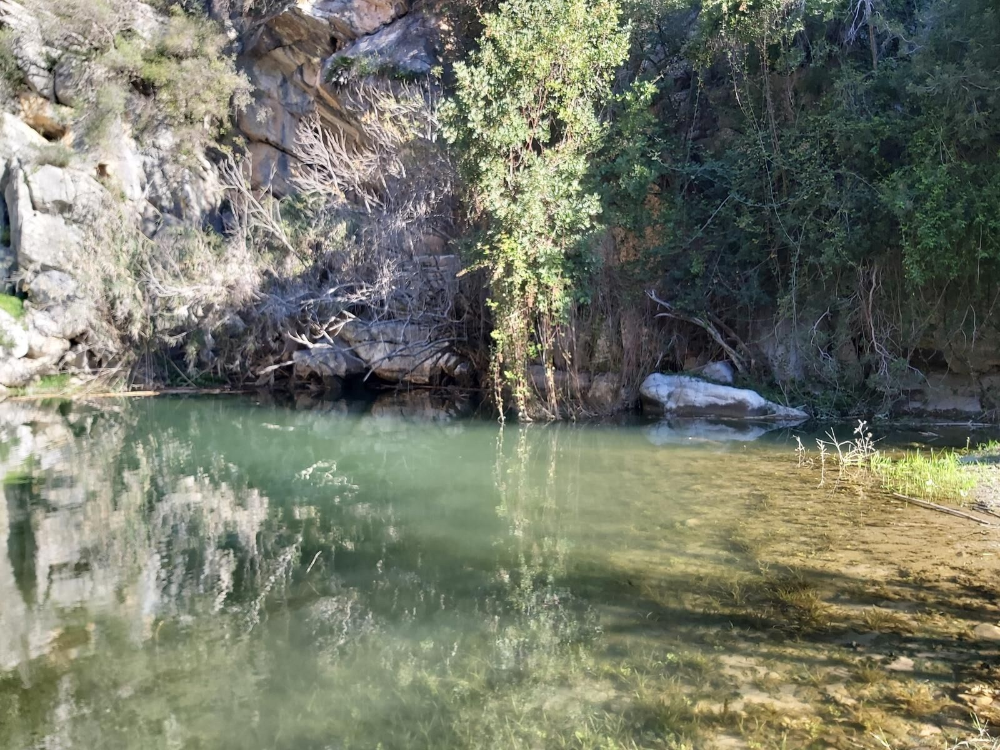

Propuesta fácil
Canuto de la Utrera y Baños de la Hedionda
Wikiloc: Fácil
Recorrido corto de ida y vuelta por el tramo frondoso del Canuto, regresando por el mismo camino. El track se acerca a los Baños de la Hedionda.
- Distancia del track
- 3,63 km
- Desnivel positivo
- 163 m
- Tipo
- Ida y vuelta
- En movimiento (registrado)
- 1 h 13 min
- Total (registrado)
- 2 h 28 min
- La visita al interior de los Baños de la Hedionda o el baño en sus aguas no forman parte de la propuesta: las condiciones de acceso no están verificadas.
Track en Wikiloc: Canuto de la Utrera y Baños de la Hedionda (abre en una pestaña nueva)